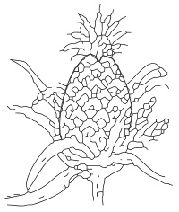

* Nutritional requirement of a cell
* Cellular respiration.
* Excretion, growth and irritability
* Reproduction
Background Information
The various biochemical reactions going on in a living cell
determines its properties and functions. Metabolism (which is
the summation of the chemical activities in a living cell) can be
divided into Anabolism (a building process) and Catabolism (a
breaking down process) Cellular properties and functions fall
into either of the two categories.
Nutritional Requirement of a Cell : Nutrition is an anabolic
process. Since there is cell membrane and protoplasm in all
cells, all cells have similar nutrition needs. This needs however
vary according to structure and complexity of the cells and
according to the special function of the cell as in cells that
perform specialized function in multicellular organisms.
The various nutritional need of cells are listed below into
essential elements (Major elements) and Trace elements (Minor
elements).
Major Elements
Trace Elements
Needed in grams
Carbon, hydrogen, oxygen,
Manganese, iron,cobalt, copper, zinc, Molybdenum boron, fluorine and iodine
Needed in Milligrams
Potassium, Sodium, Magnesium,Calcium,Chlorine.
Cellular Respiration
Respiration is a catabolic (breaking down) process
This is the means by which living things obtain energy for their
activities. The immediate source of cellular energy is the energy
stored up in the chemical bonds of organic materials. These are
called food molecules and the most common of them is Glucose
which is a sugar molecule.
Acell however cannot use the energy in sugar directly to meet its
energy needs. inorder to use this energy, a cell must transfer the
energy in its sugar molecule into a substance called Adenosine
triphosphate (ATP) :- This ATPcome from the complete break
down of glucose during cellular respiration. cellular respiration
occurs in two stages: the first does not require oxygen while the
second does.
First stage occurs at the cytoplasm. Here a molecule of glucose
is broken down to 3-carbon compound called Pyruvic acid.
The process is called glycolysis.The net result of this phase is 2
molecule of ATP, Co is released also 2
The 2 second stage Citric-Acid or Kreb’s cycle is an aerobic
stage
The pyruvic acid formed during glycolysis is transported into
the mitochondria. In the presence of oxygen, the pyruvic acid is
broken down into a 2-carbon compound called acetic acid
and a molecule of carbon (iv) oxide which is released as a
waste product.
The acetic acid then, combines with a Coenzyme A to form
acetyl COA also NADH is formed. NADH is nicotinamide
adenine nuleotide which accepts hydrogen and two
electrons. The acetyl COA eventually enters the citric acid
cycle. The end result of the cycle is 36 ATP, Co and water, 2
which are given off. Some organisms do not have the
enzymes necessary to break down pyruvic acid through
aerobic respiration. Such organisms obtain the food through
the anaerobic process. The breaking down of glucose
without oxygen into lactic acid or alcohol is called
Fermentation.
Alcohol fermentation takes place in microorganisms e.g.
yeasts while lactic acid fermentation occurs in bacteria and
animals.
Excretion
Metabolic activities in the cell results to bye products which
must be removed from the cell as its continued stay would be
poisonous. Also excess or unwanted substances in the cell,
are regarded as wastes and their removal is necessary.
Removal of unwanted substances from the cell is called
excretion.
Wastes products from the cell include:Carbondioxide and water from cellular respiration Excess water and salts, Oxygen
from photosynthesis and Nitrogenous wastes.
Growth: Growth is increase in protoplasmic content of the cell. Growth in a cell can take place due to cell division. It is
an anabolic process. In multicellular organisms, growth results to cell enlargement and differentiation (specialization)
most specialized cells loose their abilities to grow.
CELL DIVISION (MITOSIS)
The type of cell division that results to growth is called mitosis. Mitosis takes place in somatic cell (Body cell not
involved in gamate production).
Mitosis has been divided into four divisions: Prophase, Metaphase, Anaphase and Telophase. The period between mitotic
divisions is called interphase. The table below
Diagrammatically illustrate mitosis.
Various stages
1. Prophase
Features
The chromosomes becomes shorter and thicker
Two identical copies of each chrom- osomes (sister chromatids) are attached by a protein structure called kinetochore or centromeres.
The centroles begin to separate.
Diagram of structural features
fig6.1a:
Various stages
2. Metaphase
Features
Nuclear membrane disappears, chromo- somes line up accross the
become attached at the spindle fibre at the centromeres.
Diagram of structural features
fig6.1b:
Various stages
3. Anaphase
Features
The sister chromatids begin to move away from each other to opposite ends (poles) of the cell as the spindle fibre contract
Diagram of structural features
fig6.1c:
Various stages
4. Telophase
Features
The spindle fibre disappear
The nucleolus reappears
A nuclear membrane forms round each set of chromatid and the cell divided into daughter cells.
Diagram of structural features
fig6.1d:
Response to stimuli: A change in the environment which can bring about a change in activity of the cell is referred to as
stimulus. The cells change in activity is called response. Stimuli can be change in light intensity, temperature change,
change in osmotic pressure, change of humidity, change in presence of food, water or other chemicals etc.
Types of Responses:
In most cases responses to external stimuli is done by movement. Such movement can be Nastic,
Tactic or Tropic movements
Type of Response
Nature and manner of the response
Examples
1. Nastic movement
A response by a plant part to a non
directional stimulus like temperature,
light intensity, humidity etc. it can be-
caused by changes in tug pressure
of plant cells and changes in growth
rate.
(i). Folding of the leaflets of
a mimosa plant when it is
touched.
(ii). Closing of the morning glory
flower due to low light
intensity.
2. Tactic movement (Taxis)
In this case a whole organism or living thing moves
to the direction of the stimulus. It can
be positive or negative to the direction
of the stimulus.
(i). Movement of amoeba to the
direction of food.
(ii). Movement of sperm etc.
3. Tropic movement
Here the part of plant moves in resp-
onse to a directional stimulus. lt is a
growth movement and can be caused
and controlled by concentration of growth hormone
(I) Shoots of green plants moving to the direction of light.
(ii) Bending of roots towards
gravity.
Movement : The contents of the cell are not only functioning, they are also in constant movement. This
movement can be Protoplasm Streaming (Cyclosis) which can be produced by the contraction of the
Microfilaments. Cyclosis can be performed by amoeba. Paths along which materials move within the cell can
be provided by Microtubules. Microtubules also move chromatids and chromosomes during cell division.
Other structures for cell movements include cilia and flagella in unicellular organisms.
fig6.2:
REPRODUCTION:
Reproduction is the ability of a living thing to give rise to another of its kind. It can be sexual or asexual.
Asexual reproduction: This includes fission, budding, spore formation, fragmentation, vegetative propagation etc.
Sexual reproduction: All sexual reproduction must involve the fussion of sex cells (gamates). This forms the zygote
which gives rise to a new organism.
General Questions
1. State two examples of anabolic processes that goes on in a living cell
(i) Respiration (ii) Digestion
(i) Nutrition (Photosynthesis) (ii) Growth
(i) Digestion (ii) Ventilation
2. Write down seven types of substances that make up a living cell
3. Write down six major elements needed for life in a very large amounts (in grams )
4. Write down the three main organic substances in food which are known as macronutrients
5. The absence of the element
in green plants can result to the inability of
the cells to synthesize chlorophyII.
6. Obesity is a condition caused by
Less Protein
Excess carbonhydrate
Excess fat
7. To meet energy needs cells must transfer energy in sugar molecules into
8. Cellular respiration which involves an aerobic process takes place in the
while the one
that is anaerobic occurs in the
of the cell.
9. During glycolysis a 6-carbon sugar molecule is broken down to a 3-carbon compound called
10. During glycolysis, two molecules of ATP are formed while during citric acid cycle
molecules of ATPare formed.
11. In animals cells that respires anaerobically, pyruvic acid is converted into
12. Write down the overall equation for respiration
C6H12O6+6O → 6Co2+6Ho+Energy
C6H12O6+6O2 → 6Co2+6H2o+Energy
C4H12+6O2 → 6Co2+6H2o+Energy
13. The cell division that brings about growth in living things is called
14. In humans, somatic cell has
diploid number of chromosomes.
15. The last phase in mitotic cell division is called
16. Movements or responses displayed by part of a plant to non directional stimuli is called
17. The movement of plant roots towards gravity is an example of geotropism while the bending of shoots toward light is
an example of
18. Asexual reproduction does not involve fussion of nuclei, it requires mitosis; thus asexual reproduction results to
offsprings called
which are identical to the parents
19. As budding is an example of asexual reproduction, conjugation is an occurrence in
20. The DNAcode is copied by the process of
Expression Exercise
1.a Write down the products of fermentation in plants and yeasts.
Teacher's attention required
(b) Compare Alcoholic fermentation and lactic acid fermentation
Teacher's attention required
Alcoholic fermentation
Lactic acid fermentation
1
2
3
2. Write down two things that can happen during interphase
Teacher's attention required
fig6.3:
(c) Identify the phase in cell division shown in the diagram and write
down two things that characterizes the phase
Teacher's attention required
3(a) What is differentiation?
A process of cell division
A process of cell specialization
A process of cellular metabolism
(b) Write down four examples of asexual reproduction in organisms
(b) Write down three important hormones that stimulate growth
Auxins Gibberellins cytokinins
Tyroxin, Adranalin, Pancreatic juice
Testoterone, Oestrogene, Paratyroxine
5 (a) Write down the structures that bring about movement in the following organisms or cell in the table below
Organisms
Structures
i
Amoeba
ii
Paramecium
iii
Euglena
iv
Clamydomonas
v
Spermatozoa
(b)
(i) What is a perennating organ in plants?
Organs that enable plants to reproduce
Organs that enable plants to grow
Organs of plants that enable them to survive from one growing season to the other.
(ii) Write down five examples of such organs
Practical Activities
Activity 1: To find out if energy (heat energy) is given out in respiring seeds Materials/Apparatus required
40g Germinating been seed; 40g Bean seeds killed by soaking the seeds in formalin
2 vacuum flasks; 2 Thermometers, Adisinfectant, cotton wool, Retort stand and clamp
Procedure/Method
1. Set up the apparatus as shown in the figure below with flask A containing germinating beans and flask B containing
dead bean seeds after washing the seeds in a dilute solution of dettol.
2. Record the temperature in each of the flasks at the beginning of the experiment.
3. Continue to record the temperature every morning and evening till about one week
fig6.4a:
fig6.4b:
Flask A
Flask B
1st day morning
2st day morning
3st day morning
4st day morning
5st day morning
6st day morning
7st day morning
Questions
1. Why do we need to wash all the seeds with disinfectant
Teacher's attention required
2. Conclude the result of the experiment based on which flask that showed greater increase in
temperature
Teacher's attention required
Activity 2: To find out anaerobic respiration in a living cell
Apparatus/materials
10% glucose solution it can be boiled and cooled
10% yeast solution (the water is boiled and cooled before the
yeast is added.
Boil 100cm of the glucose solution to drive off air. Then allow it to cool
Put 50cm each of glucose solution to flask Aand Flask B respectively
and immediately add about 5cm of the oil to each flask.
fig6.5a: Mushroom
fig6.5b: Mushroom
Using the dropper pipette, add the yeast solution below the oil layer in flask A
Put a thermometer in each flask using cotton wool to keep it in position at the ‘neck’of the flask.
Record the temperature in each flask at the beginning of the activity, then check the temperature at each
flask at intervals of one hour and record your readings in your
practical note book.
From your experimental activity and findings (observations) answer the questions below:
(i) Write down the conclusion you are able to reach from your result
(ii) What was the purpose of the oil layer in each flask?
(iii) What purpose does the flask B set up serve in the experiment?
Activity 3
Materials to be provided.
Onion bulb, Pineaple, Cocoyam corms, Sugar cane stem, Yam tuber with new tendril
fig6.6a:
fig6.6b:

fig6.6c:
fig6.6d:
fig6.6e:
Examine all the given specimen
(i) What type of asexual reproduction is common to all of them?
(ii) Why are organs shown here referred to as perennating organs?
(iii) Write the names of those perennating organs
1a What type of sexual reproduction does the diagram above illustrate
b. At what stage does fertilization occur?
c. Compare the diagram above with the one below and identify two similarities in both
Fig 6.7a
Fig 6.7b
fig6.7a:
fig6.7b:
Fig 6.7a
Fig6.7b
* Both are reproducing by Vegetative Propagation
* Both are perenating Organs
CELL PROPERTIES AND FUNCTION (PAST SSCE QUESTIONS)
November 1990 Q4 June 1993Q8bc
1. Name two organisms that produce by budding
Earthworm; Snail
Yeast; Hydra
Tapeworm; Snail
fig6.8a
2. In an experiment it was found that auxin was concentrated more on the shaded side
of the shoot as shown in the diagram. Answer questions (a) to (c)
From which direction did light reach the shoot?
Towards which of the directions. Side A or side B will the tip grow
Suggest a title for this experiment
Teacher's attention required
JUNE 94 Q5
3. The diagram below illustrates two homologous chromosomes during meiosis. Use it
to answer question 3.
Teacher's attention required
fig6.8b:
Name the point labeled I
What is the importance of those points in evolution?